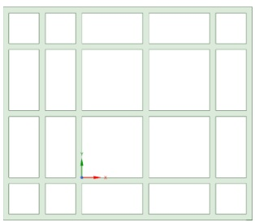
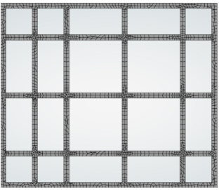
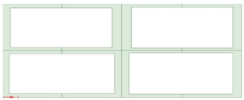
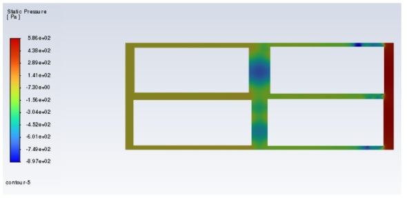

WPI Autonomy, Control & Estimation Lab · Summer 2025
Urban Wind Simulation
A research internship building a 2D fluid simulation of wind moving through city streets, with the long-term goal of making autonomous drone delivery safer.
Why it matters
Autonomous drones that deliver packages have to fly through cities, where streets and buildings change how wind flows. Understanding those wind patterns is a first step toward limiting the risks of drone delivery. My job was to build the simulation that models them.
The workflow
- Learned the tools. I taught myself ANSYS Student through tutorials, following the ones my supervisor suggested along with others I found on my own.
- Built the geometry. In ANSYS SpaceClaim, I drew a multi-block city layout with many intersections.
- Meshed it. In ANSYS Mechanical, I generated an unstructured 2D mesh that is finer at intersections and coarser along straight road segments.
- Ran the flow. In ANSYS Fluent, I started the simulation from standard atmospheric conditions.


Finding the flaws and fixing them
The first model worked, but it had two problems that I tracked down and fixed.
- The geometry was too perfect. Every street had the same width and length. Real cities don't work that way: street dimensions vary with the buildings beside them, and that changes how wind interacts with the buildings and the air.
- The mesh was too coarse at the walls. Building edges create most of the changes in urban wind patterns, so they need a fine mesh. Road centers vary less, so a coarser mesh is enough there.
I rebuilt the model with varied street dimensions and a refined mesh along the building walls. To keep the problem manageable, I reduced it to a single city block.

Results
The simulation produced pressure and velocity contour plots. The velocity plot resembled the ones I found online for similar setups. The pressure plot below shows a strong pressure change across the block, with a low-pressure region in the cross street between the buildings.

Limits and next steps
I treat these results as a working proof of concept, not final answers. Two things would make them more trustworthy:
- A better-controlled mesh, since the unstructured mesh could introduce inaccuracies
- Real weather data for the starting conditions in Fluent, instead of standard atmospheric values
What I took away
This was my first real research lab experience, with actual research tasks, weekly presentations to the lab head and a 9-person research group, and a written research report. I learned ANSYS Mechanical, SpaceClaim, and Fluent, which are a big step up from the GMSH and Nek I had used only briefly. It strengthened my CFD and CAD skills, along with teamwork and problem-solving, and it confirmed that I want to keep doing research.